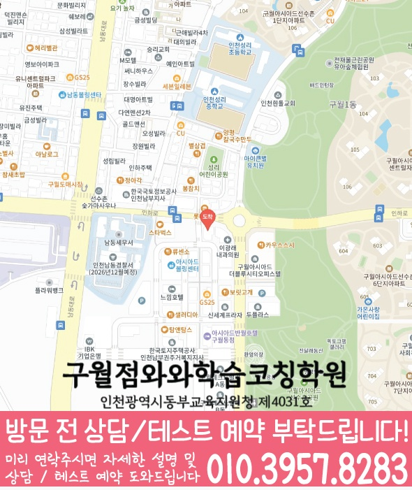

단순 문제풀이 이전에 개념 이해도와 단원별 약점, 풀이 습관을 확인해 중3 내신에 맞는 학습 순서를 구성합니다.
지역별 수강 안내
관교동 중3 수학학원
방문할 지점과 수강 조건
구월점 수강 정보
- 연결 지점
- 구월점와와학습코칭학원
- 수학 수강 학년
- 초1~초6 / 중1~중3 / 고1
- 방문 주소
- 인천 남동구 선수촌공원로23번길 6-29 다복타워 401호 와와학습코칭학원
제공된 지점 자료에서 구월점의 중3 수학 수강 학년을 확인했습니다. 현재 모집과 시간표는 상담에서 확인해 주세요.
인천 남동구 관교동에서 중3 수학을 포함해 영어·국어·영수(영어+수학)를 함께 준비하려는 학생을 위한 안내입니다. 와와학습코칭센터 구월점은 진단을 바탕으로 개념을 빈틈없이 정리하고, 내신·단원별 유형 학습과 오답 관리를 통해 실수를 줄이며 성적이 오르는 학습 흐름을 제공합니다. 학생별 학습 속도와 목표를 확인해 수업과 코칭을 함께 진행합니다.
관교동 중3 수업의 핵심 포인트
수학은 개념-유형-오답 원인을 체계적으로 분리하고, 영어·국어는 독해/문법/서술 접근을 점검해 함께 점수를 끌어올립니다.
선생님 특징
어디에서 막히는지 질문과 풀이 과정으로 확인하고, 필요한 개념을 다시 연결해 중3 수학의 흐름을 잡아줍니다.
숙제·복습·오답 정리 루틴을 점검해 수업이 끝난 뒤에도 실력이 유지되도록 코칭합니다.
수업 진행방식
1. 현재 수준 확인
중3 학년 진도, 최근 시험 성적 흐름, 자주 틀리는 유형을 바탕으로 부족한 단원과 취약 포인트를 정리합니다.
2. 개념 정리와 유형 학습
바로 심화 문제로 넘어가기보다 핵심 개념을 먼저 정리하고, 대표 유형부터 단계적으로 적용 문제까지 훈련합니다.
3. 오답 관리와 학습 피드백
틀린 문제를 다시 푸는 데서 끝내지 않고, 왜 틀렸는지(계산/개념/독해/조건) 원인을 기록해 다음 풀이 전략으로 연결합니다.
학년별 학습 전략
중등(중1~중2)
- 기본 개념을 안정적으로 잡고, 누적되는 오답 원인을 초기에 정리합니다.
- 중간·기말 시험에 맞춰 단원별 유형 반복과 실수 방지 훈련을 진행합니다.
중3(내신 핵심)
- 단원별 내신 출제 경향과 난이도를 반영해 수학·영어·국어 학습을 균형 있게 구성합니다.
- 시간 관리, 계산 정확도, 오답 패턴(조건/그래프/문장 독해)을 집중 점검합니다.
고등 연계(선택)
- 중3에서 완성해야 할 개념을 바탕으로 고등 과정의 기초를 점검합니다.
- 약한 단원은 반복 보완하고, 시험 전 복습 계획을 체계적으로 조정합니다.
시험 대비
- 학교별 시험 범위와 평가 방식에 맞춰 복습 스케줄을 재설계합니다.
- 시험 전에는 자주 틀리는 문제 유형과 실수 유형을 우선 점검해 점수 상승을 목표로 합니다.
인천 남동구 관교동 중3 수학학원을 찾는 학생이라면 와와학습코칭센터 구월점과 함께 시작해 보세요. 학생의 현재 상태와 내신 목표를 기준으로 수학(중3) 중심 학습 로드맵을 만들고, 영어·국어·영수까지 통합 코칭으로 학습 방향을 자세히 안내드립니다.
센터 위치 안내
주소
인천 남동구 선수촌공원로23번길 6-29 다복타워 401호 와와학습코칭학원
오시는 길
아시아드 로터리에서 농협 건물을 지나 세무서 방향으로 가면 바로 옆 건물에 있습니다.
상담에 참고할 학교 목록
학교별 내신 수업과 수강 가능 여부는 센터에 확인해 주세요.
초등학교
인천관교초등학교
인천성리초등학교
인천승학초등학교
중학교
관교여자중학교
관교중학교
남인천여자중학교
인천성리중학교
고등학교
인명여자고등학교
과목별 수강 가능 학년
국어
초1
초2
초3
초4
초5
초6
중1
중2
중3
영어
초1
초2
초3
초4
초5
초6
중1
중2
중3
고1
고2
수학
초1
초2
초3
초4
초5
초6
중1
중2
중3
고1
과학
초1
초2
초3
초4
초5
초6
중1
중2
중3
사회
초1
초2
초3
초4
초5
초6
중1
중2
중3
학원 등록 정보
교육비 참고와 확인할 조건
구월점 수업료 안내
| 대상 | 과목·과정 | 수업 구성 | 안내 금액 |
|---|---|---|---|
| 초등 | 안내 예시 | 주 1회 180분, 월 4회 | 140,000원 |
| 중등 | 안내 예시 | 주 1회 180분, 월 4회 | 152,000원 |
| 고등 | 안내 예시 | 주 1회 180분, 월 4회 | 175,000원 |
| 초등 | 안내 예시 | 주 3회 90분, 월 12회 | 200,000원 |
| 중등 | 안내 예시 | 주 3회 90분, 월 12회 | 217,000원 |
| 고등 | 안내 예시 | 주 3회 90분, 월 12회 | 250,000원 |
| 초등 | 안내 예시 | 주 2회 180분, 월 8회 | 280,000원 |
| 중등 | 안내 예시 | 주 2회 180분, 월 8회 | 282,000원 |
| 고등 | 안내 예시 | 주 2회 180분, 월 8회 | 325,000원 |
센터 안내 자료에 기재된 금액입니다. 수강 가능 학년, 과목, 수업 시간과 추가 프로그램에 따라 달라질 수 있으므로 최종 교습비는 센터에 확인해 주세요.
중3 수학 상담부터 오답관리까지 이어지는 흐름
중3 수학은 현재 내신 성적만 보는 단계가 아니라, 고등 수학으로 넘어가기 전 개념 연결과 풀이 습관을 정리해야 하는 시기입니다. 상담에서는 학교 진도, 시험 범위, 자주 틀리는 유형, 풀이 기록을 함께 확인해 학생에게 맞는 학습 순서를 잡습니다.
현재 수준 확인
학교 진도, 최근 시험 결과, 어려운 단원, 숙제 수행률과 실수 유형을 확인합니다.
개념과 유형 진단
중3 핵심 단원의 개념 이해, 조건 해석, 식 세우기, 도형 추론 과정을 나누어 봅니다.
플래너 실행 점검
단원별 복습, 유형 반복, 시험 범위 마감 계획을 세우고 실제 수행 여부를 확인합니다.
오답 원인 분석
틀린 문제를 개념 부족, 조건 누락, 계산 실수, 풀이 전략 부족으로 분류해 다음 학습으로 연결합니다.
CONSULTING CHECKLIST
관교동 중3 수학학원 상담 전 체크리스트
실제 상담 전 아래 항목을 확인하면 학생에게 필요한 영어·수학 학습 방향을 더 빠르게 정리할 수 있습니다.
- 현재 교재사용 중인 교재와 진도를 확인합니다.
- 최근 시험지점수보다 반복되는 오답 유형을 확인합니다.
- 공부 시간평소 공부 시간과 숙제 수행 정도를 봅니다.
- 상담 목표성적, 습관, 오답, 시험 대비 중 우선순위를 정합니다.
STUDY GUIDE
관교동 중3 수학 학원 학습관리 포인트
관교동 중3 수학 학원을 찾는 학생이라면 중3 과정에서 필요한 수학 학습 목표를 먼저 정리하는 것이 좋습니다. 현재 학교 진도와 최근 시험 결과, 숙제 수행 습관을 함께 보면 상담 방향이 훨씬 구체적입니다.
공식 암기보다 단원 핵심 개념을 말로 설명할 수 있는지 확인하고, 설명이 막히는 부분부터 다시 정리합니다.
학교 시험에 자주 나오는 기본·응용 유형을 구분하고, 풀이 순서를 스스로 재현할 수 있게 반복합니다.
계산 실수, 조건 해석 오류, 개념 부족, 시간 부족을 나누어 기록하면 다음 복습 계획이 더 정확해집니다.
인천 남동구 관교동 상담 전 체크
최근 시험지, 학교 진도, 어려운 단원, 숙제 수행 정도를 함께 정리해두면 상담에서 학생에게 필요한 학습 순서를 더 빠르게 잡을 수 있습니다.
함께 보면 좋은 학습가이드
현재 페이지의 학년·과목과 연결되는 정보성 콘텐츠입니다. 지역 페이지와 함께 읽으면 상담 준비와 학습 계획을 더 구체화할 수 있습니다.
관교동 관련 학원 페이지
현재 보고 있는 지역 안에서 센터 안내와 학년·과목별 상세 페이지로 바로 이동할 수 있습니다.
관교동 중3 수학학원 상담이 필요하신가요?
중3 수학의 현재 개념 이해도, 내신 대비 계획, 고등 수학 준비, 오답 패턴을 상담문의로 남겨주시면 학습 방향을 구체적으로 확인할 수 있습니다.
상담문의LOCAL DETAIL LINKS
관교동 관련 학습 페이지 바로가기
같은 동네 안에서 함께 보면 좋은 학년·과목별 학습 안내 페이지를 정리했습니다.
동네 학원
관교동학원 영어수학 전문학원
같은 동네의 기본 영어수학 학원 안내로 이동합니다.
연관 과정 관교동 고1 수학학원같은 동네의 다른 학년·과목 안내도 함께 확인할 수 있습니다.
연관 과정 관교동 고1 영어학원같은 동네의 다른 학년·과목 안내도 함께 확인할 수 있습니다.
연관 과정 관교동 고2 수학학원같은 동네의 다른 학년·과목 안내도 함께 확인할 수 있습니다.
연관 과정 관교동 고2 영어학원같은 동네의 다른 학년·과목 안내도 함께 확인할 수 있습니다.
연관 과정 관교동 중2 수학학원같은 동네의 다른 학년·과목 안내도 함께 확인할 수 있습니다.
연관 과정 관교동 중2 영어학원같은 동네의 다른 학년·과목 안내도 함께 확인할 수 있습니다.
연관 과정 관교동 중3 영어학원같은 동네의 다른 학년·과목 안내도 함께 확인할 수 있습니다.
수강 전에 자주 묻는 질문
관교동에 있는 별도 지점인가요?
이 동네 안내에서 연결되는 곳은 구월점와와학습코칭학원입니다. 실제 방문 주소는 인천 남동구 선수촌공원로23번길 6-29 다복타워 401호 와와학습코칭학원입니다.
중3 수학을 수강할 수 있나요?
제공된 지점 자료에서 구월점의 중3 수학 수강 학년을 확인했습니다. 현재 모집과 시간표는 상담에서 확인해 주세요.
교육비 표의 금액으로 바로 등록할 수 있나요?
지역 공통 참고표는 개별 지점의 확정 교습비가 아닙니다. 교습비 안내 자료에서 과목당 금액과 수업 시간·횟수·교재비를 확인하고 최종 비용을 상담에서 확인하세요.
학습코칭 안내 이미지와 위치 지도 보기



안내 자료 대조: . 현재 모집·시간표·최종 비용은 지점에서 확인해 주세요.